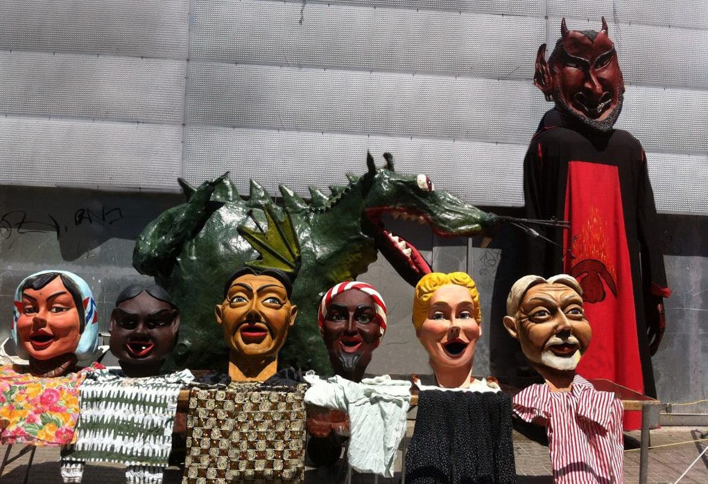

Correfoc de Llefià
El nostre correfoc anual, una de les cites més esperades del barri. Una nit màgica plena de foc, música i tradició.


El Grup de Diables Kapaoltis és una colla dedicada a preservar i difondre la tradició dels correfocs i la cultura popular catalana. Des de 1987, portem el foc i la festa als carrers de Badalona i més enllà.
Coneix-nos millor
Gegants, draga i capgrossos que complementen la família Kapaoltis i porten alegria a les nostres cercaviles.

Els nostres tabalers posen el ritme musical que acompanya l'actuació dels diables amb energia i passió.

Participem activament en les festes de la Mercè, festes de Maig i moltes altres celebracions.
El nostre correfoc anual, una de les cites més esperades del barri. Una nit màgica plena de foc, música i tradició.
Participem anualment a les festes de la Mercè, portant la nostra energia i tradició a la ciutat de Barcelona.
Presència consolidada a les festes de la nostra ciutat, celebrant amb els nostres veïns i amics.